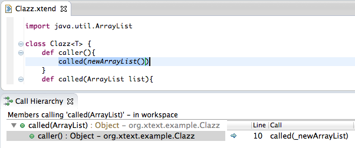
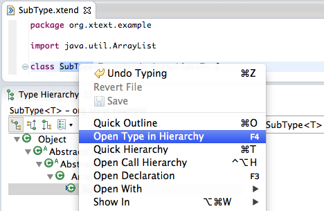
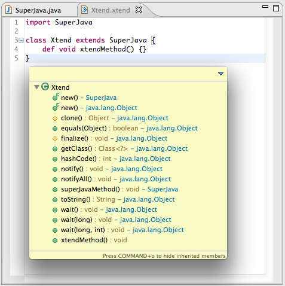
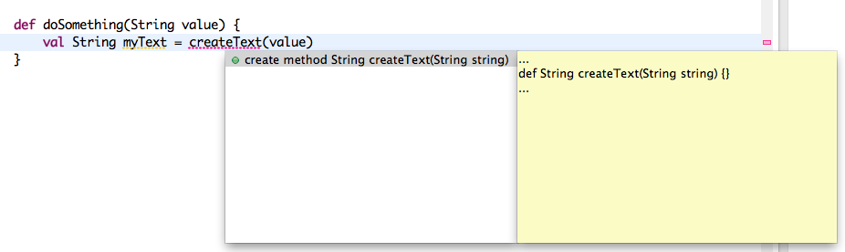

What's coming in Xtend 2.3 New & Noteworthy
The next release of Xtend will be available in June. It will come with many, many bug fixes, performance improvements and the following new features:
Several Language Enhancements
On the language level the next release has a couple of nice improvements and new features as well. Some of them are small but neat changes, e.g. it's no longer mandatory to write empty parentheses in constructor calls. Others deserve an entry on their own:
Properties Since M7
A new annotation @Property will generate a Java-Bean-style getter and setter (if the field is not final) for an annotated field.
class Person {
@Property String firstName
@Property String lastName
}
The field itself will be renamed to _fieldname, to make one accesses the getter (resp. setter) when using the property syntax. OF course a getter or setter is only generated when not explicitly defined.
Data Classes (aka Value Objects)Since M7
Another annotation @Data, will turn an annotated class into a value object class. A class annotated with @Data has the following effect:
- all fields are flagged final,
- getter methods will be generated (if not existent),
- a constructor will be generated (if not existent),
- equals(Object) / hashCode() methods will be generated (if not existent),
- a toString() method will be generated (if not existent).
Example:
@Data class Person {
String firstName
String lastName
}
For now the processing of the two annotations is hard coded into the compiler. However as described in this bugzilla, we want to add support for library level annotation processing. This will allow for adding other annotations like @Delegate etc. Also we want to make this very easy so you can easily define your own project-specific annotations. Unfortunately this will not make it into the upcoming release.
With Operator Since M7
A new operator '=>' has been added to the language and a corresponding extension method for java.lang.Object on the left hand side and a lambda expression on the right hand side. The with operator allows you to write:
new JTextField => [ text = 'My Text' ]
Think of it as a let-expression, which allows for binding any object to the scope of the block, in order to do side-effects in it. Very handy when initializing objects.
Multiple Classes per File Since M7
You can now have any number of classes in a single file. Also the name of the first class must no longer match the file's name. But still if it matches it will be renamed in a rename refactoring.
Number Literals Since M6
Xtend now has comprehensive support for number literals. This includes most of the things you can do in Java, and in addition it has first class support for BigDecimal and BigInteger (including overloaded arithmetic operators).
new BigDecimal("6.1").subtract(
new BigDecimal("0.755").multiply(BigDecimal.valueOf(3L)))
In Xtend you can use literals and operators :
6.1bd - 0.755bd * 3bd
Var-Args Since M6
Varargs can now be declared in Xtend methods as well. The syntax and semantics are just like in Java. Also calling varargs works as expected.
def String concat(String... strings) {
....
}
def void useConcat() {
concat('can', 'pass', 'any', 'number', 'of', 'strings')
}
Abstract Classes Since M7
Long overdue but finally you can declare abstract classes in Xtend. The syntax is much like in Java although you don't have to use an abstract keyword for abstract methods. Flagging the class abstract is sufficient. Here's an example:
abstract class MyAbstractClass {
def String toBeImplemented(String myArg)
def doStuff(String otherArg) {
return toBeImplemented(otherArg)
}
}
Enhanced Field Decaration Since M7
Also overdue but finally here: Fields can be declared as 'val's which make them final. Also type inference is now supported on fields as well.
class MyClass {
val finalField = 'hello world'
var nonFinalInitializedField = myField.toUpperCase
String nonFinalNonInitializedField
}
Debugging since M6
Debugging through Xtend and Java is now fully supported. Setting breakpoints in Xtend works just as in Java and you can even switch to the Java level whenever wished by a context menu action.
Also all the cool features known from the Java debugger, like ‘Display’, ‘Inspect’, or ‘Exception Breakpoints’ are available.
Seamless JDT Integration since M6
Not only the debugger but all of JDT's navigation functionality now works seamlessly with Xtend. No matter if you click on a stack frame in an exception, a failing unit tests, some node in the call hierarchy or the type hierarchy: if the target element is implemented in Xtend, you'll end up in the Xtend editor at the original source location.
Generated Code View Feel the Trace
But what if you want to see the generated Java source? You can of course open the Java file in an editor, but there's now an even better tool : The Generated Code view. In that view you see detailed information of which parts in the Java source were derived from which in the Xtend code, simply by marking the corresponding sections.

Improved Hovers since M6
The hover comes with a completely new HTML rendering for documentation comments. It supports all Javadoc tags like @param, @link or @see and even provides the resolved type information for generified types and methods. It is now easily possible to have a look at the inferred type of local variables and expressions. Also, the hover shows an expanded version of a sugared expressions.

Call-Hierarchy since M6
In Xtend the open call hierarchy action is now available using the same shortcuts as in Java. It shows all calls to the selected method, field or constructor, no matter whether they are called from Xtend or Java.
Type-Hierarchy since M6
Also the Type Hierarchy view can be opened and populated from within an Xtend class. Just press ‘F4’ when your cursor sits on a type's name. It shows the type hierarchy of the selected classes. You implemented parts of the hierarchy in Java and other in Xtend? Don't worry. They will work perfectly together.
Inherited members in quick outline since M6
When pressing CTRL+O in an Xtend editor the quick outline pops up. It shows all the members of the currently edited class. Pressing CTRL+O once more will add the members inherited from super classes as well. A search field lets you simply filter by name in order to navigate to any member quickly.
Create Method Quickfix since M7
For unresolvable method invocations there now is a quick fix to create trhe missing method.

Compiler Improvements since M6
To make the generated Java code even more readable, the compiler can now inline certain operations. As a result the generated Java code is more idiomatic and therefore more readable. Also some superfluous statements have been removed.